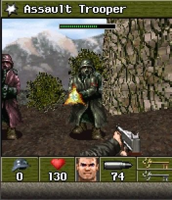
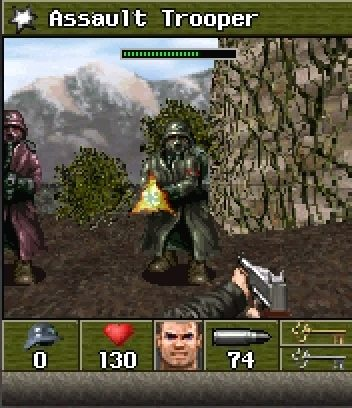

Ласкаво прошу до затишного куточка! Тут ви знайдете цікаві покупки, прикольні речі, ігровогі сетапи, аніме штуки та багато іншого.
Сетапи
Круті штуки
RGB стрічка
Крута світлодіодна LED RGB стрічка
Настільний RGB
Прикольний настільний нічник з маркером
Аніме
Різні аніме штуки
Спорт
Різні спортивні знаряддя
Кухня
Всякі товари з кухні
Плюши
Мʼякі плюшеві іграшки
Рухома фігурка
Ігрова збірна екшн-фігурка для позування
Лампи
Настільні нічники та лампи
Графічний планшет
Планшет для малювання зі стилусом
Енергетики
Кофеїнові напої з красивим дизайном

Мікрофон
На вид ігровий мікрофон

Інші речі
Багато іншого всередині
Творкота
Арти


Це Shinobu для програмки петів ― SteamWorkShop, один із моїх перших цифрових артів, не згадуючи майн піксель арти

Насправді це був серйозний арт і я довго старався, тоді це виглядило забавно, ну а зараз крінжово) Ще й багато лайків набрало в Реддіт. Малював 2 з половиной години.

Shinobu. Цим артом я був задоволеним, трохи втянувся в інструментах та знайшов як малювати не надто криво. Малював майже 5 годин.

Другий арт з Shinobu, який я змалював з мему. Малював 3 години.

Hexy, тут я пробував малювати одежину, з цими всіма складками і зжиманнями (рука кста моя). Малював 10 годин.

Покращив трохи здібності (а може і ні), спробував інші пози, а не просто профіль тіла. Також пробував робити пишне тіло з деталями і намалював фон. Малював 5 з половиной годин.

Ранні. Ця ідея вже давно була в голові, коли грав в Елден та дізнався що є її кукла, то образ зразу появився в голові. Малював 10 годин.

Брунхільдра. Моя OC, навів-демонесса варварша з грайливим та відвертим характером. Ще давно хотілося намалювати дві версії арту. Малював 11 з половиною годин.

Груди я малював годину.
Зрисовка хуманізованої Rainbow Dash яка тискає ApleJack. У мене таких зрисовок та совїх артів зі школи повно, треба буде знайти блокноти.
Хочеться малювати і багато, ідей більше сотні але не можливо в теперешній ситуації і часу поменше стало.
Фігурки з бумаги
Лена з Бесконечного Лета
Lavanika з Castle Clash
Ззаду
Pumpkin Duke з Castle Clash

Skull Knight з Castle Clash
Aries з Castle Clash зправа
Відоси
Гра OSU!
Гра OSU! з таблетом
Майнкрафт момент
Майнкрафт момент 2
(. ❛ ᴗ ❛.)
(. ❛ ᴗ ❛.)
PSP

⠀⠀PSP 2000 - Найкраща приставка яку я тримав. Вона у мене вже дуже давно, мені її подарували на день народження, вона вже купу раз ламалася, один раз навіть летально як я думав, але все таки я її реанімував. Ця карманна приставка принесла величезну кількість емоцій та визиває люту ностальгію, з нею звʼязано багато приємних спогадів.
Інфа
Поломки
⠀⠀Одні з перших поломок були звʼязані з дисплеєм. Один раз дисплей тупо вигорів на сонці, другий раз був розбитий. Тоді були перші розборки та заміна дисплею. Декілька разів відказували кнопки, їх теж міняв, та якийсь час грав без лівих кнопок, це був ще той казус.
⠀⠀Фатальні поломки вже коснулися материнської плати та неможливістю зʼєднати материнку зі слотом карти памʼяті. Купувати материнську плату було дуже дорого, тоді я вирішив її відремонтувати самостійно. Я тоді цілий день провозився, паяв, перепаював, зʼєднував, все було безуспішно, приставка навіть не подавала ніяких позивів життя. Проходили тижні, я знову засів її ремонтувати, запасся новими проводами та деякими частинами, які я заказував з інтернету. І після декілька днів, вона почала включатися. Радості тоді не було предела, але хоть вона і включалася, проблема з Sd слотом нікуди не ділася, без неї по суті, вона і далі залишалася куском кирпичу.
⠀⠀Проходили місяці, роки, я вертався ремонтувати та зʼєднувати, давав в сервісні центри, вони нічого не могли зробити. Тоді я вже закинув на багато років.
⠀⠀Коли переїхав в інше місце, то через час я знову зарядився ідеєю її починити, після сабу в Reddit, де виставляли користувачі свої піхи. Начитався купу гайдів, передивився купу відосів, але все було марно, все той же кирпич.
⠀⠀Але однієї ночі я наткнувся на Monogatari Portable, гри якої я ніколи не бачив, але це був одним із моїх любимих фандомів. Я вже ощутив як я в неї граю на своїй приставці. Я просидів всю ніч, на всіх форумах з подібною проблемою, звʼязався з усіма ким міг, людьми з Америки, Японії та інших країн, тепер я знав трохи більше про цю проблему. Потратив цілий день, відкинувши всі справи, та наплював на всіх, я мусив її починити, це була остання спроба.
⠀⠀Я розібрав її максимально як міг, знайшов недалеко від свого розташування паяльник та орендував його, довго консультувався з техніком та говорив з декількома майстрами про аспекти видалення деталей з плати, та що краще не зачіпати рядом з Sd слотом. Я приступив до роботи, я зовсім не їв, не відпочивав, та робив те що хотів під слова, що нічого в мене не вийде і взагалі займаюсь дурною справою.
⠀⠀І ось я коє як зʼєднав всі елементи та видалив декілька для одного костиля, щоб зʼєднати з другою допоміжнюю деталею. Ну вона включилася і працювала, запихую карту памʼяті... нічого. Я був замучений і депресивно настроєний на все, віддав паяльник, прибрав місце роботи і все, нічого не робив. Але все таки просто так зʼявилася ідея заказати адаптер, щоб перевірити останню справу, бо коли я все зʼєднував, то зчухрав поверхню, де зубчики повинні касатися адаптера, та і на вид він був згорівшим. Заказав, але руки знову впали, бо я знайшов такий же адаптер, який валявся в деталях, він був розтрощений в хлам, повністю розпався, скотчом його зʼєднав та вставив для перевірки, воно перший раз блимнуло, бо щось побачило, але це був лише раз і більше він нічого не подавав, поверхня знову стерлася повністю, бо плата сильно деформувалася після купи ремонтів.
⠀⠀Наступний день, адаптер приїхав і зразу побіг за ним та всовувати в приставку. Я вже не надіявся ні на що, бо він і не входив в слот, та єлі як його запхнув, повредивши його навіть, що якщо дістати, то він буде не в стані, який можна повернути. Без емоційно я включаю піху, та бачу конаткт - індикатор карти памʼяті ПОЧАВ МИГАТИ! Мене переповнили мурашки, файли зʼявилися на екрані. Перша гра для перевірки, яку я скачав була NFS Most Wanted. Далі були проблеми з джойстиком, але це все вже не важливо, бо це все фікситься, мабуть, головне що головна проблема була вирішена. (Карту памʼяті я тепер дістаю за допомогою зубочистки, щоб случайно не витягнути адаптер, він точно застряг і витягувати його смертельно))
PSP-2000
The slimmer and lighter revision with improved battery life and faster USB charging.

PSP-3000
Features an improved LCD screen with better color reproduction and anti-reflection technology.


 



.webp)